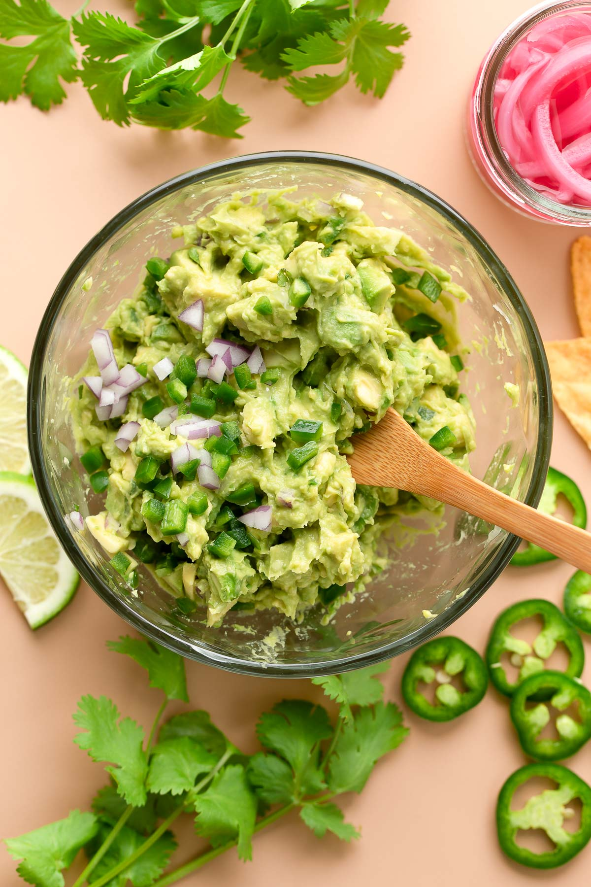

spicy Guacamole

it comes to versatility and creative liberty, none can beat the Guacamole. The recipe presented below is what I prepare regularly, and it impresses family and friends without failure. Let's start cooking!
Ingredients
ripe avocados
lemon or lime
pickled chillies, any type of your choosing
paprika
salt
pepper
Note: You can modify this list any way you like, as long as the avocados are present.
preparation
- Deshell the avocados. Either by scooping with a spoon or peeling off the skin (don't forget the giant pit!)
- Mash the now skinless avocados. Use any mashing tool, a fork is what I normally use.
- Dice up the pickled chillies on a seperate platter or board and add them in.
- Zest the lemon or lime with a fine grater for added flavor.
Note: Zesting is taking off the colored part of a citrus fruit's skin (zest), which is above the bitter white portion of the skin (pith)
- Chop the fruit in half and squeeze out the juice onto the avocados
- Add salt, pepper and paprika. Remember to be generous with the salt! Guacamole is known for being forgiving when it comes to salt and acidity.
- mix it up!
Wew! Now you have yourself a beautiful platter of Guacamole, ready to be enjoyed on bread, meat, or whatever you wish!
If you want a alternative recipe that doesn't use the time-sensitive and expensive avocados, you can use this Hummus recipe.